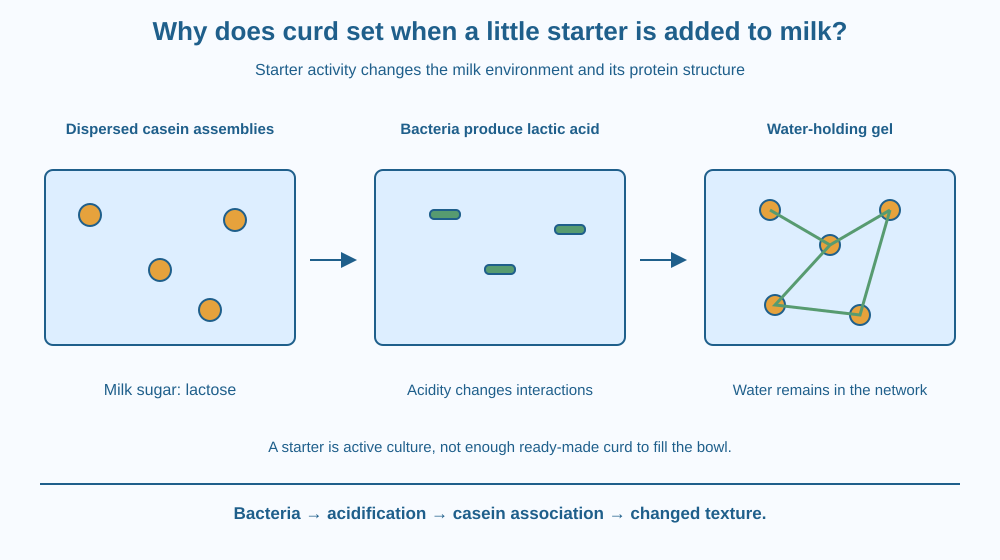

Trace the role of a curd starter from living bacteria to changed milk structure. Identify lactose, lactic acid and casein. Explain why setting depends on biological activity and conditions, not merely on stirring a white spoonful into another white liquid.
A small amount of curd is mixed into suitable warm milk. Several hours later, the milk can become a soft gel. The starter is much smaller than the final bowl, so it cannot simply have filled the space with ready-made curd.
What changed through the larger volume? The starter carries living microorganisms that can act on a milk component and alter the conditions around milk proteins. The resulting network explains why a flowing liquid can become spoonable.
The mechanism connects a biological process with a material change that is visible in an ordinary kitchen.
Milk contains water, fat, proteins, minerals and a sugar called lactose. Traditional curd starters contain communities of microorganisms, including lactic acid bacteria. School examples commonly refer to Lactobacillus, but an actual starter need not be a single pure bacterial species.
Under suitable conditions, these bacteria use lactose and produce lactic acid. This is a form of fermentation. Our focus is the acid's effect on milk structure, not a repeat of the earlier lesson on cellular energy pathways.
Milk contains proteins called caseins, organised in small assemblies called micelles. These protein assemblies remain dispersed under the original milk conditions. As the mixture becomes more acidic, the balance of interactions between them changes.
Casein assemblies can then associate into a gel network that holds much of the water and other milk components. This network produces the thicker, set texture. The starter has caused changes throughout the milk through biological activity rather than contributing enough solid material to account for the whole bowl directly.
Temperature influences the microorganisms' activity and the developing structure. Milk that is too cool may set slowly. Excessive heat can damage the starter organisms. The useful temperature depends on the culture, so a single universal setting temperature should not be claimed for every traditional starter.
Time also matters. A five-minute classroom setup cannot normally demonstrate the entire fermentation. The rate depends on the starter, milk, temperature and handling. A thickened result is therefore an observation to connect with conditions, not a promise that every bowl sets after exactly the same interval.
The liquid sometimes seen separating from curd is commonly called whey. Disturbing or contracting the gel can change how much liquid is visibly released. This does not mean that all the milk water was chemically converted into the solid part.
Curd formation is not identical to spoilage by arbitrary microbes. Safe food preparation depends on appropriate ingredients, clean handling and established household practices. This lesson explains the mechanism without asking students to grow unknown microbes or decide food safety from smell alone.
Draw a cup containing separate protein-assembly symbols. Add a few bacterial symbols labelled starter. In the next stage, add an acid-production arrow and connect the protein symbols into a loose network.
Shade water throughout the spaces in the network. This prevents the mistaken picture that the final curd contains only protein and no water. A gel is a structure holding fluid, not simply a dry pile of solid grains.
Keep three steps distinct: bacteria act on a milk component, acidity changes, and proteins associate differently. The final texture is the result of the chain, so omitting either the biological or structural step leaves the explanation incomplete.
The SVG shows milk with dispersed casein assemblies, starter bacteria producing acid, and a connected protein gel. Water remains represented in every stage. A separate label identifies lactose as the milk sugar involved.
The diagram uses enlarged symbols; bacteria and casein assemblies are not visible at this scale in a kitchen bowl. The network is schematic, not a photograph of its exact geometry.
The arrows connect fermentation with changed protein interactions. They do not suggest that bacteria physically weave strings between every particle or that the starter simply expands to occupy the entire bowl unchanged.

Many Indian households make dahi using a small portion from an earlier batch as starter. The tradition is an example of transferring an active microbial community into a fresh food environment under suitable conditions.
Different milk compositions and starter cultures can produce different textures and tastes. A comparison must record those differences before blaming temperature alone. Using a changed milk and a changed starter at once makes it harder to identify a cause.
Commercial yogurt and traditional dahi are not guaranteed to use identical cultures or processing methods. Their shared broad principle is microbial acidification influencing the milk proteins, while the practical recipes and controls can differ.
Use paper, blue and green pencils, and a spoonful of already prepared curd only if an adult permits. No milk incubation or heating is required. Do not taste the handled sample.
This is a mechanism model and observation of an existing food, not a five-minute fermentation experiment. Do not leave an experimental bowl unrefrigerated or use unknown spoiled milk to create a comparison.
Suppose two bowls use the same milk but different starter communities. Why might their setting behaviour differ even at the same temperature?
Now imagine one bowl is disturbed repeatedly while the other is left still. Which observation might concern the developing gel rather than just bacterial activity? Separate changes in the biological process from changes caused by physically handling the structure that forms.
Which milk sugar is used by lactic acid bacteria?
Answer: C — Lactose is a sugar present in milk and used during lactic fermentation.
Why does milk become thicker as curd sets?
Answer: A — Acidification changes protein interactions and allows a gel network to form.
Two trials change both milk and starter. What is the main comparison problem?
Answer: B — Changing two relevant factors makes their individual effects difficult to separate.
Write a three-stage explanation for a younger student who thinks the starter simply turns larger by absorbing milk. Include the milk sugar, the acid produced and the casein network.
Then design a paper comparison that changes only starter identity while recording milk and temperature conditions. State why a real food trial would require adult control and why a sour smell alone would not certify that an unknown sample is safe.
A small starter can influence a much larger volume because living organisms act on material already present in the milk. The final structure comes largely from the milk's own components. The change is therefore neither a simple dilution of the starter nor the replacement of all the milk with bacterial cells.
Lactic acid bacteria act on lactose, increasing acidity and changing casein interactions so a water-holding protein gel can form.